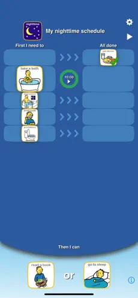

RECURSOS
- Acesso completo e ilimitado a todos os quatro tipos de quadros: Programação, Espera, Emoções e Escala de Emoções
- Biblioteca de Imagens pré-carregada com mais de 180 imagens e áudio
- Adicione suas próprias imagens e grave seu próprio áudio para personalização ilimitada
- Anexe vídeos a qualquer imagem do quadro
- Crie facilmente perfis para personalizar e gerenciar vários usuários
- Salve um número ilimitado de quadros para várias crianças ou diferentes rotinas
- Fale os quadros em voz alta com voz de criança ou adulto
- Compartilhe quadros por e-mail, pelo aplicativo Arquivos ou iTunes com outros usuários do aplicativo Choiceworks
- Capacidade de imprimir quadros ou salvar como PDF
- Opções avançadas de compartilhamento
- Temas personalizados
- Assistente de Biblioteca
- Sons de temporizador personalizados
DOWNLOAD